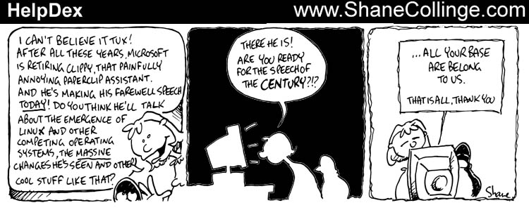
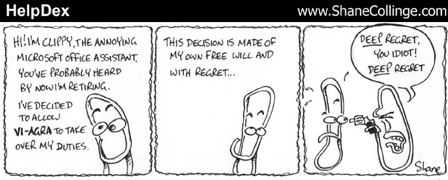
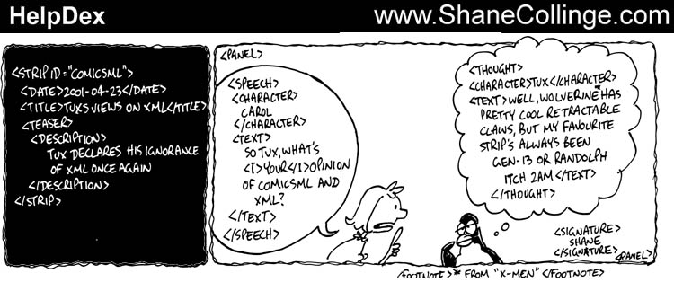

For those not into gaming, "All your base are belong to us", is a video-game slogan translated from the Japanese. Read the LA Times article, see the history, or watch Clippy sing it on the Microsoft site (turn on Javascript and run the mouse back and forth over the links in the left column and watch what the Clippy image does, then click on the "Click" button several times).
[Too bad I can't listen to the song, "It Looks Like You're Writing a Letter", since it's in Windows Media format. I would just like to see its parody version, "It Looks Like You're Writing a Suicide Note". -Mike.]
I read the overview by Jason McIntosh about ComicsML over the weekend. There's a lot of sense in what he says: about the ability to define comics and to be able to search archives and automate processes. As an example, just last week I was searching for a specific Far Side and luckily the text had been reproduced within a HTML page so I was able to find it. Otherwise I could have been searching fruitlessly for weeks.
That said, as an artist myself the act of documenting artwork and standardizing it seems to demystify the process. Part of the magic of reading today "Pearls Before Swine" or "Randolph Itch 2am" is having to track it down and read it. Automating the process turns it into a kind of Shakespeare-via-Brodies-Notes. There is no shortcut to art. Add that to the technical fact that the time taken to draw a strip will now double - once for the art which we already draw and ink, then the marking up of the ComicsML after the fact, thinking of an appropriate teaser, typing the spoken text etc. Sheesh! Most cartoonists barely have enough attention span to brush their teeth,
[And run around chasing villains all day. -Mike.]let alone do all this house-keeping for each and every strip.
Art as revenue-raiser also requires that human intervention be present. When HelpDex was running on LinuxToday.com the filenames were randomized so automated scripts or robots COULDN'T simply pull down the pics every day. LT was paying for a service that would entice readers to their site, not robots. There's no incentive to sponsor a strip without being able to quantify the hits or business generated.
I sound harsh, but I'm not. ComicsML does look like a good idea being introduced at a good time. The new breed of cartoonist literate in new technologies such as the ones working in Flash and so on would pick this up quickly and once standardized, could help spread information much more rapidly than currently occurs. I feel from conventional artists such as myself there is bound to be a slow uptake as this simply adds more effort to setup than the benefit it would realise.
What am I trying to say? I think it's a tidy idea but I'm
too darn lazy to implement it unless I can see a direct
benefit from the extra effort required.
Part computer programmer, part cartoonist, part Mars Bar. At night, he runs
around in a pair of colorful tights fighting criminals. During the day... well,
he just runs around. He eats when he's hungry and sleeps when he's sleepy.
 Shane Collinge
Shane Collinge
Copyright © 2001, Shane Collinge.
Copying license http://www.linuxgazette.net/copying.html
Published in Issue 66 of Linux Gazette, May 2001